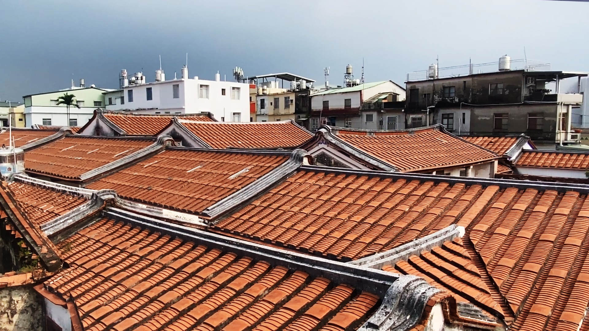
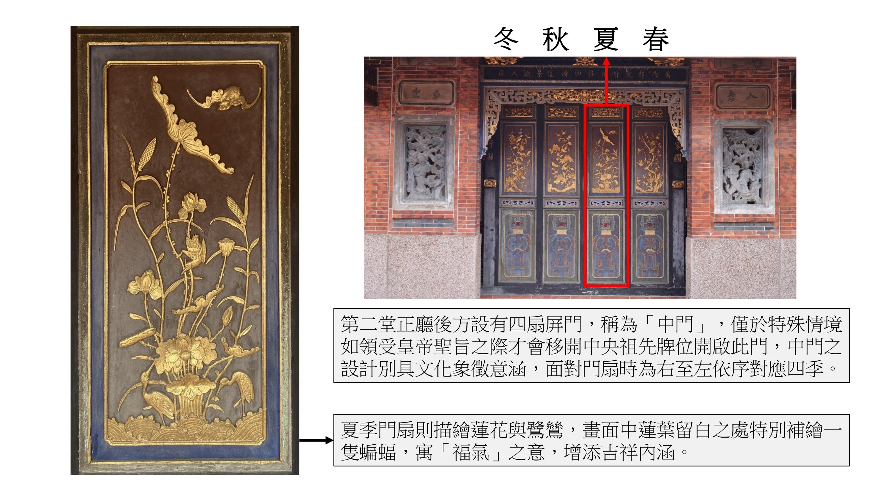
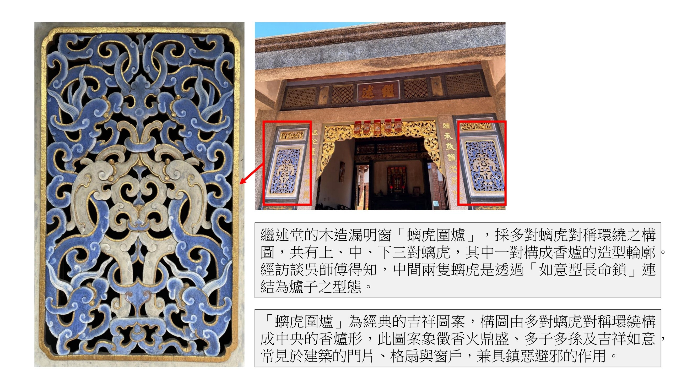
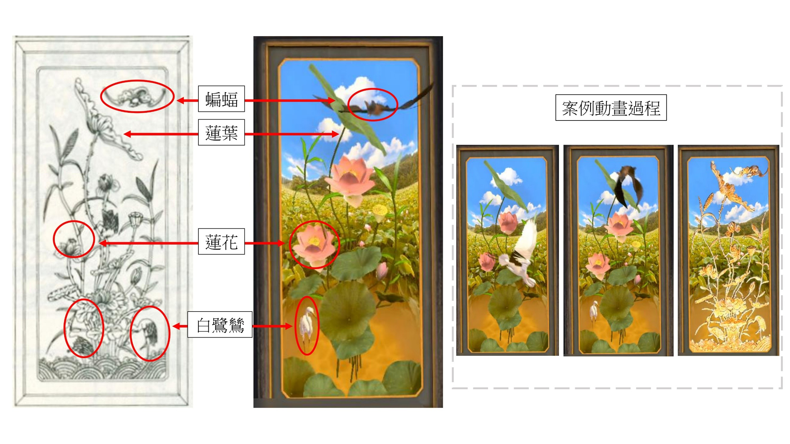
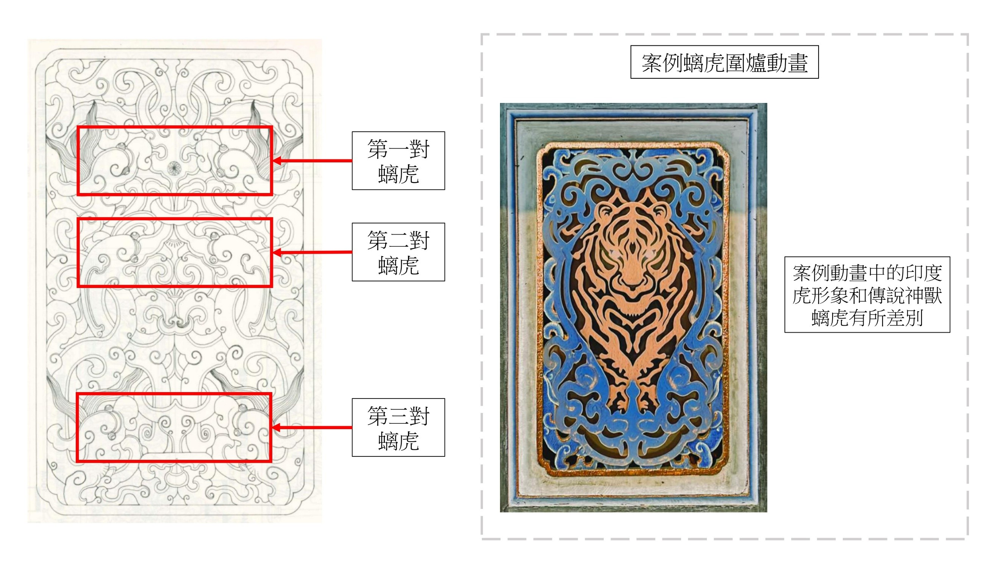

文化資產建築語彙數位轉譯與推廣之研究——以佳冬蕭宅為例
錢田田
關鍵字：文化資產數位轉譯; 3D點雲;文化推廣;佳冬蕭宅
摘 要
運用數位保存技術，作為預防性保存與修復專業，早已是世界趨勢。臺灣近年亦持續推動古蹟3D掃描與數位化，累積豐富的數位保存成果，但運營數位內容進行大眾推廣的案例仍相對有限。因此本研究以具有圍壟式五堂大屋格局的縣定古蹟佳冬蕭宅為案例，探討傳統漢移民建築之文化價值與特色，思考如何運用3D掃描檔案結合數位媒介進行文化詮釋與推廣。
本研究實證地點為佳冬蕭宅，依據文資法已證實的研究調查，本研究詳閱米復國(1994)屏東縣第三級古蹟佳冬蕭家古厝之研究與修復計畫作為基礎，並結合實地勘察與訪談人國寶傳統木雕施鎮洋匠師之藝生吳師傅，進行文化資產的數位敘事轉譯。

本研究以佳冬蕭宅為案例，探討傳統建築裝飾之文化資訊如何透過數位轉譯轉化為一般大眾易於理解之文化內容。研究挑選蕭宅中門之夏季木扇作為代表性的裝飾案例，並挑選四個蕭宅代表性裝飾進行數位轉譯實踐。透過蒐集相關文獻資料、與傳統木雕匠師訪談，解讀雕刻圖樣之形式與文化意涵，再為其製作知識點並轉化為動畫腳本。建立「資料蒐集與文化解讀—知識整理—腳本撰寫—數位影像製作」之流程，作為學術研究與數位媒體製作之間的轉譯架構，透過動畫呈現使文化資產資訊由專業知識轉化為具視覺性、敘事性及教育性的數位內容。

| 時間 | 腳本內容 |
|---|---|
| 1S-4S | 甦醒—由門扇實際照片開始，鏡頭緩慢推近。金色雕刻逐漸產生光影變化，蓮葉輕輕搖曳，水面出現細微漣漪，整幅雕刻彷彿在夏日微風中甦醒。 |
| 4S-10S | 鷺鷥飛翔—雕刻中的鷺鷥展開雙翼，從荷塘中振翅飛起，優雅地掠過蓮花與蓮葉，在畫面中繞行後回到荷塘附近，呈現夏日荷塘的生氣。 |
| 10S-12S | 蝙蝠帶來福氣—鏡頭移向上方蓮葉留白處，蝙蝠展開翅膀飛出，繞行於荷花與蓮葉之間。飛行過程帶出細微金色光點，象徵「蝙蝠寓福」，為夏日荷塘增添吉祥意涵。 |
| 13S-15S | 歸於平靜—鷺鷥飛遠，蝙蝠回到原本位置，荷花與蓮葉在微風中輕輕擺動，水面漣漪逐漸消散，整個畫面恢復寧靜。所有元素回到原本雕刻的位置與形態。金色光影淡出，畫面由動畫自然轉回實際門扇照片，完整呈現原始雕刻圖樣，最後定格。 |
圖表1木扇轉譯影像腳本
(圖表來源：本研究撰寫)



本研究未來嘗試運用3D點雲軟體NUBIGON，製作數位模型，比較傳統現場測繪製作的圖面資料。也將嘗試利用數位模型，製作相關數位文化推廣影片。期待藉由數位科技提升文化資產資訊的可近性與互動性，建立未來傳統建築數位保存、展示及教育推廣之參考。
安百和（2020）。擴增實境技術應用於文化資產保存與觀光導覽之研究。碩士論文，89。
米復國（1994）。屏東縣第三級古蹟佳冬蕭家古厝之研究與修護計畫。屏東市：屏東縣政府。
周如意（2015）。分析社群網站在無形文化資產推廣之應用：以蘇厝長興宮瘟王祭為例。碩士論文，101–102。
邱健洲（2020）。沉浸式藝文活動與古蹟導覽體驗設計之研究。博士論文，154。
張瓏（2006）。台灣建築類文化資產保存之推動策略研究。碩士論文，150。
黃冠博（2010）。文化資產渴望說服文化資產推廣策略研究。碩士論文，150。
劉宣佑（2023）。民俗文化資產教育推廣資源研究以臺北市為例。碩士論文，45。
鄭衣娟、鄭琨鴻、陳怡廷（2013）。全景古蹟虛擬導覽之虛擬化身設計與評估： 使用者經驗探索。文化資產保存學刊，(66)，7-26。